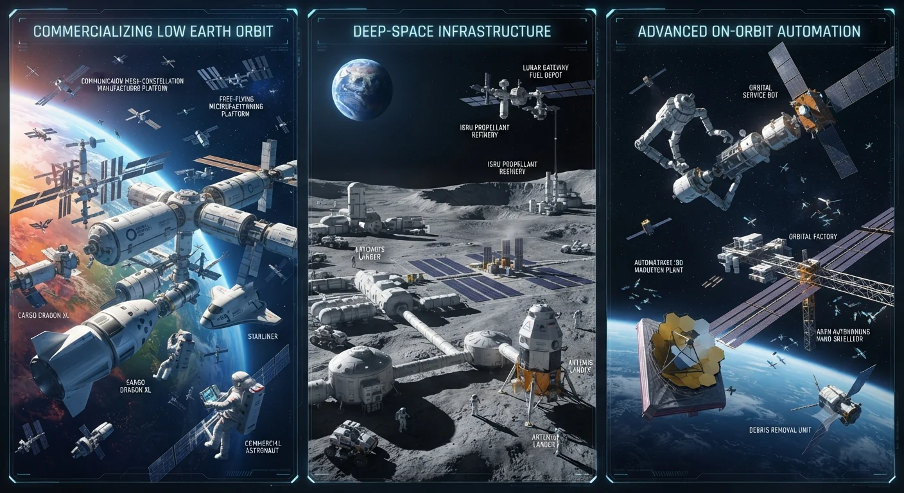
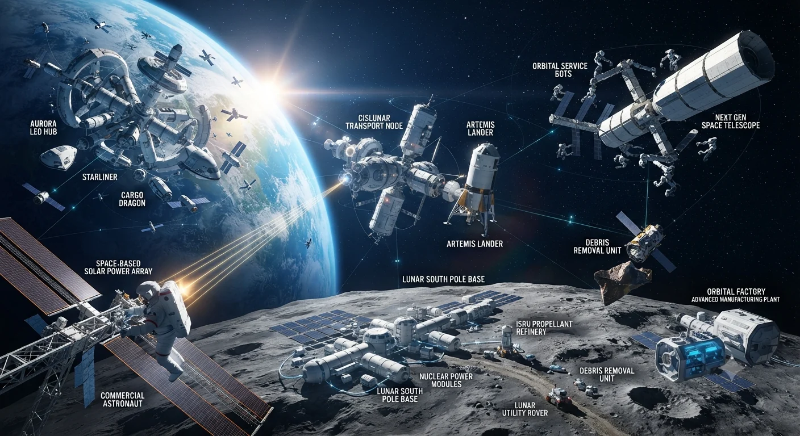
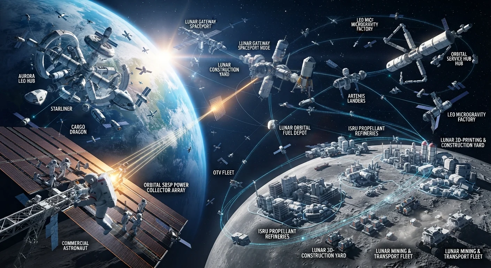

The landscape of space technology is experiencing a historic transformation, driven by a shift from government-led exploration to a vibrant, multi-trillion-dollar commercial ecosystem. The convergence of reusable rocketry, miniaturized electronics, and artificial intelligence has unlocked unprecedented capabilities. Three primary pillars currently define this new era: the commercialization of low Earth orbit (LEO), the development of deep-space infrastructure, and the rise of advanced on-orbit automation.
Commercializing Low Earth Orbit
Low Earth orbit is no longer the exclusive domain of government space stations. It has transitioned into a bustling commercial marketplace characterized by private habitability, manufacturing innovation, and ubiquitous connectivity.
The impending retirement of the International Space Station (ISS) has catalyzed a private space station gold rush. Aerospace companies, backed by both private venture capital and NASA Commercial Low Earth Orbit Destinations (CLD) funding, are actively designing and launching free-flying commercial habitats. These orbital outposts will ensure a continuous human presence in microgravity, serving as platforms for commercial research, pharmaceutical production, and space tourism.
Microgravity manufacturing represents one of the most lucrative frontiers in LEO commercialization. Certain materials can be produced with structural and biochemical purity in space that is physically impossible on Earth. Fiber optics manufactured with ZBLAN fluoride glass in microgravity exhibit significantly lower signal attenuation than silica-based fibers. Similarly, pharmaceutical companies are utilizing microgravity to grow larger, more uniform protein crystals, facilitating the creation of advanced monoclonal antibodies and cancer treatments that can be administered via injection rather than lengthy intravenous infusions.

Concurrently, the LEO communications sector has been completely revolutionized by mega-constellations. Thousands of low-latency, high-throughput satellites now orbit the globe, providing broadband internet to remote regions, maritime vessels, and commercial aviation. This proliferation of satellites has also driven down the cost of bus components, solar panels, and ion propulsion systems through mass production, lowering barriers to entry for commercial operators across the globe.
Deep-Space Infrastructure
While LEO handles the immediate commercial and logistical needs of near-Earth operations, deep-space infrastructure focuses on establishing a permanent foothold on the Moon and preparing for crewed missions to Mars. This pillar requires an entirely new paradigm of logistics, power generation, and in-situ resource utilization.

The Artemis program and international lunar initiatives have shifted the lunar paradigm from “flags and footprints” to sustainable, long-term habitation. This requires robust infrastructure, beginning with communication and navigation networks around the Moon. Lunar GPS-equivalent systems and high-bandwidth laser communication links are being deployed to connect assets on the lunar surface with orbital command nodes and Earth mission control.
Power and mobility are equally critical. Lunar nights last for roughly fourteen Earth days, plunging base camps into total darkness and extreme cold. Developing compact nuclear fission reactors alongside advanced solar-plus-storage grids is essential for powering lunar habitats, scientific instruments, and ISRU (In-Situ Resource Utilization) plants. ISRU itself is a game-changer for deep-space economics. Rather than launching every drop of water, oxygen, and rocket propellant from Earth's deep gravity well, space agencies and private ventures are designing extraction systems to mine lunar polar ice. This water can be split into hydrogen and oxygen, creating local propellant depots that turn the Moon into a refueling gas station for deeper space missions.
Transportation infrastructure is evolving to support these ambitions. Heavy-lift, fully reusable launch systems are drastically reducing the cost per kilogram to escape Earth's gravity. These vehicles act as the foundational trucks of the solar system, moving large modular habitats, unpressurized rovers, and heavy scientific payloads to translunar space.
Advanced On-Orbit Automation
As the sheer volume of space assets explodes, traditional, labor-intensive mission control models are becoming unsustainable. Managing thousands of active satellites, assembling complex infrastructure in orbit, and maintaining deep-space assets demand a massive leap in autonomy. Advanced on-orbit automation and artificial intelligence are stepping in to bridge this gap.
On-board artificial intelligence and edge computing allow modern spacecraft to process telemetry, analyze hyperspectral imagery, and make critical operational decisions in real-time without waiting for round-trip communication signals from Earth. Satellites can autonomously detect weather anomalies, track maritime traffic, or adjust their orbits to avoid space debris milliseconds before a collision. This autonomy is vital for deep-space missions where communication delays with Earth can span from minutes to hours.
Robotics and on-orbit servicing (OOS) are transforming satellite architecture. Historically, once a satellite ran out of fuel or suffered a mechanical failure, it became space junk. Today, robotic servicing vehicles are being developed to dock with aging satellites, refuel their thrusters, repair degraded solar arrays, and even upgrade their onboard computer hardware. This capability extends the operational lifespan of multi-million-dollar assets and significantly alters the financial models of satellite operators.

Furthermore, large-scale orbital assembly relies entirely on advanced automation. Structures too large to fit inside the fairing of any existing rocket—such as massive synthetic aperture radar antennas, space-based solar power collectors, and modular habitats—must be built in space. Autonomous robotic arms, 3D printing systems in microgravity, and swarms of cooperating nano-satellites are being engineered to construct these massive infrastructures piece by piece, operating safely in the harsh vacuum of space without putting human astronauts at continuous risk during routine construction tasks.
The Interconnected Horizon
These three trends do not exist in isolation; they reinforce and accelerate one another. The revenue generated from commercial LEO markets provides the capital required to fund high-risk deep-space research. The automation algorithms perfected on commercial constellations in Earth orbit are adapted for autonomous lunar rovers and deep-space probes. And the heavy-lift infrastructure built for lunar exploration makes frequent, heavy commercial cargo runs to LEO economically viable.
As these technologies mature, space is transitioning from an arena of scientific exploration and geopolitical competition into a fully integrated extension of the terrestrial economy. The companies and nations that master LEO commercialization, deep-space logistics, and intelligent automation will define the economic and strategic architecture of the coming century.
Return to Space Technology or read the ASARK Space Technology Journal.